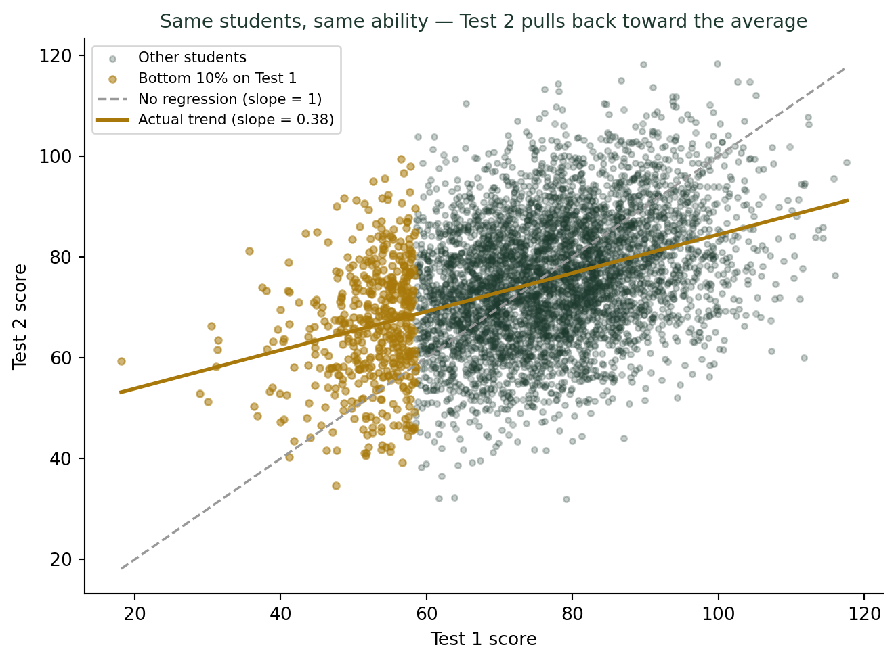
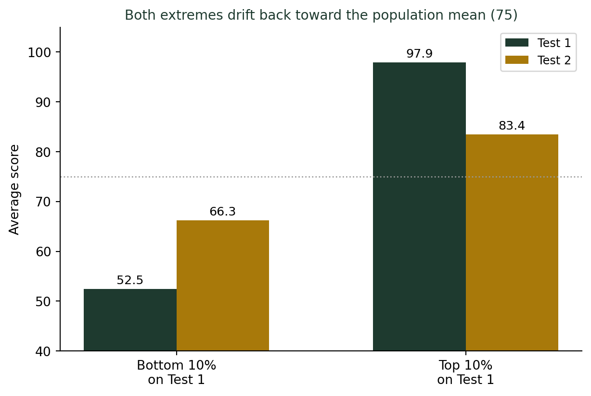

(사람의 직관은 왜 통계와 충돌하는가) 시험을 망친 다음 점수가 오르는 이유
통계기초
상관분석
행동통계
중간고사를 망친 아이를 학원에 보냈더니 기말고사 점수가 올랐다. 학원이 정말 효과가 있었을까? 실력이 전혀 변하지 않는 가상의 학생 5천 명을 시뮬레이션해도, 낮은 점수를 받은 학생들의 다음 점수는 평균 14점 가까이 저절로 오른다.
“그 학원 다니고 성적이 20점 올랐대요”
평소 80점대를 받던 학생이 중간고사에서 55점을 받았다. 부모는 놀라서 급하게 학원에 보낸다. 기말고사에서 그 학생은 75점을 받는다. 학원 홍보 문구에는 이렇게 적힌다. “20점 상승! 우리 학원의 효과를 증명합니다.”
통계학을 조금 배운 사람이라면 다른 질문을 던진다. “이 학생이 학원에 안 갔어도 점수가 올랐을까?” 놀랍게도, 답은 대체로 “그렇다”에 가깝다. 실력이 조금도 변하지 않은 가상의 학생들을 컴퓨터로 만들어도, 유난히 낮은 점수를 받았던 학생들의 다음 시험 점수는 저절로 오른다.
실력은 그대로, 시험 점수만 오르내리는 가상의 학생들
가상의 학생 5,000명을 만든다. 각 학생에게는 시험을 여러 번 봐도 잘 변하지 않는 “진짜 실력”을 하나씩 부여한다(평균 75점, 표준편차 8점인 정규분포). 그리고 실제 시험 점수는 이 진짜 실력에, 그날그날의 컨디션·문제 운·긴장도 같은 순전한 우연을 더해서 정해진다고 가정한다. 중요한 것은, 이 우연 요소는 이번 시험과 다음 시험에서 완전히 독립적으로 다시 뽑힌다는 점이다 — 즉 “운이 좋았다/나빴다”는 것 자체가 다음 시험까지 이어지지 않는다.
회색 점선(대각선)은 “실력이 그대로면 점수도 그대로”라는 순진한 예상이다. 그런데 실제 추세선(금색)은 대각선보다 훨씬 평평하다. 1차 시험 점수가 낮았던 학생(주황색 점)들은 2차 시험에서 대체로 대각선보다 위쪽, 즉 더 높은 점수를 받는 쪽에 몰려 있다. 반대로 1차 시험에서 매우 높은 점수를 받았던 학생들은 2차에서 대각선보다 아래쪽으로 몰릴 것이다. 이 현상에 정확히 “평균으로의 회귀(regression to the mean)”라는 이름이 붙어 있다.
학원과 관계없이 상위 학생, 하위 학생 점수는 평균으로 돌아온다
같은 시뮬레이션에서, 1차 시험 하위 10%와 상위 10% 학생들만 따로 골라 평균 점수 변화를 비교해보자.

하위 10% 학생들의 평균 점수는 52.5점에서 66.3점으로, 아무 개입 없이도 13.8점 올랐다. 반대로 상위 10% 학생들의 평균 점수는 97.9점에서 83.4점으로, 14.5점 떨어졌다. 이 학생들 중 누구도 실력이 바뀌지 않았다. 시뮬레이션에는 학원도, 과외도, 밤샘 공부도 존재하지 않는다. 그저 극단적으로 낮았던(혹은 높았던) 점수에 우연히 섞여 있던 “운” 성분이, 다음번에는 다시 평균 수준으로 돌아갔을 뿐이다.
이 착각이 위험한 이유
이 통계적 현상은 “극단적으로 나쁜 상태의 대상”을 골라 뭔가를 처방하면, 그 처방이 아무 효과가 없어도 반드시 좋아진 것처럼 보이게 만든다. 성적이 급락한 학생에게 보낸 학원, 통증이 극심할 때 찾아간 병원, 부진에 빠진 선수에게 붙인 새 코치 — 전부 마찬가지다. 원래 극단값은 시간이 지나면 저절로 평균 쪽으로 돌아온다. 그런데 그 사이에 뭔가 조치를 취했다면, 사람들은 그 조치가 효과를 냈다고 믿기 쉽다. 이것이 위험한 이유는, 정말 효과가 없는 처방도 이 착시 덕분에 “효과가 있었다”는 후기를 끝없이 만들어낼 수 있기 때문이다.
“효과가 있었다”는 말을 들으면 확인할 것
- 개입을 받은 대상이 원래 극단값(매우 나쁘거나 매우 좋은 상태)이었는가? 그렇다면 평균으로의 회귀만으로도 상당한 변화가 저절로 생긴다.
- 비교집단이 있는가? 같은 조건의 학생 중 학원에 가지 않은 그룹의 점수도 얼마나 올랐는지 비교해야, 학원의 진짜 효과와 평균으로의 회귀를 구분할 수 있다.
- “딱 한 번의 극단적 사건” 이후를 보고 있는가? 시험 점수, 운동 경기 성적, 질병 증상은 원래 오르내림이 있다. 가장 나쁜 순간 직후를 기준으로 삼으면, 그다음은 언제나 나아 보인다.
더 깊이: “회귀”라는 이름 자체가 이 현상에서 나왔다
강의노트 〈선형모형 1. 회귀분석 개념 — 역사〉는 이 용어의 기원을 그대로 설명한다. 영국의 통계학자 프랜시스 골턴(Francis Galton)은 완두콩 씨앗의 무게를 관찰하다가, 큰 씨앗에서 나온 후대 씨앗이 부모만큼 크지 않고 평균 쪽으로 가까워지는 현상을 발견했다. 이를 사람의 키 연구로 확장해, 키가 매우 큰 부모의 자녀는 부모보다 작고(그러나 여전히 평균보다는 크고), 키가 매우 작은 부모의 자녀는 부모보다 크다는 사실을 확인했다. 골턴은 이 현상에 “회귀(regression)”라는 이름을 붙였고, 오늘날 통계학 전체를 관통하는 “회귀분석”이라는 용어가 여기서 나왔다. 강의노트가 다루는 회귀계수의 성질 — 상관계수 \(r\)이 1보다 작으면 예측선의 기울기도 항상 1보다 작다는 사실 — 이 바로 오늘 시뮬레이션에서 확인한 기울기 0.38의 정체다. 시험 두 번 사이의 상관관계가 완벽(r=1)하지 않은 한, 극단값은 언제나 평균 쪽으로 당겨진다.
결론: 극단 다음에는 원래 평균으로 돌아온다
학원이 정말 효과가 없다는 뜻은 아니다. 다만 “성적이 바닥을 찍은 학생을 학원에 보냈더니 성적이 올랐다”는 경험담 하나만으로는, 그 상승이 학원 때문인지 평균으로의 회귀 때문인지 전혀 구분할 수 없다. 골턴이 완두콩과 사람의 키에서 발견한 이 현상은, 시험 점수든 운동 성적이든 주가든 극단적인 관측값 다음에는 어김없이 나타난다. 나는 학생들에게 이렇게 말한다. “바닥을 찍은 다음 날 해가 뜨는 건, 어제 기도를 했기 때문이 아니다. 원래 해는 매일 뜬다.” 극단 다음에 찾아오는 회복을 보거든, 무엇이 그 회복을 만들었는지 묻기 전에 먼저 물어야 한다. “애초에 이 정도 회복은, 아무것도 안 해도 일어날 만한 크기였는가?”